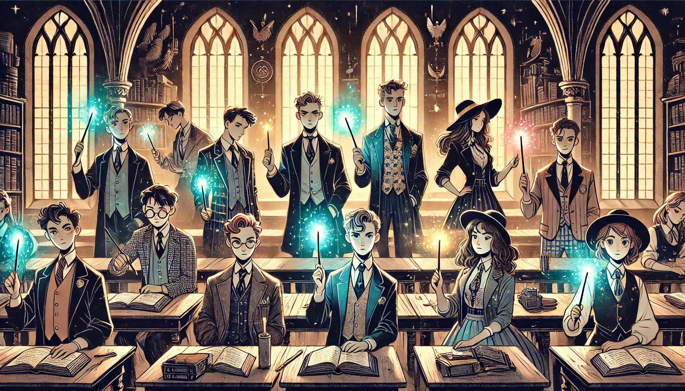

해리포터
목차
작가
J.K.롤링
출판일
1997년
감상평에 대한 AI그림
다양한 마법 요소들로 신비한 분위기를 느낄 수 있으고 읽다 보면 그 세계 속에 살고있는 것 같은 기분이 든다.
등장인물들의 성장을 지켜보며 독자도 함께 성장할 수 있으며 매번 흥미진진한 이야기와 개성있는 캐릭터들이 등장해 여러번 읽게 되는 책이다.

감상평에 대한 AI평가
✨
신비한 마법세계, 성장 서사, 흥미로운 이야기, 매력적인 캐릭터라는 네 가지 핵심 요소를 짧고 명확하게 전달했다.
✨ 구체적인 예시와 심화된 해석이 더해진다면 더욱 완성도 높은 감상이 될 수 있다.
✨ 개성 있는 캐릭터들이 어떻게 이야기를 풍부하게 만드는지, 특히 해리, 헤르미온느, 론, 스네이프, 덤블도어 등 주요 인물 분석이 더해지면 깊이 있는 감상이 될 것이다.